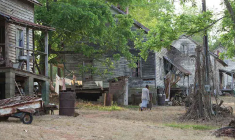
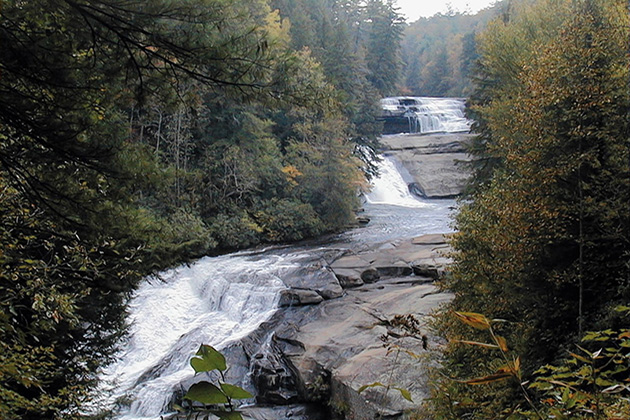
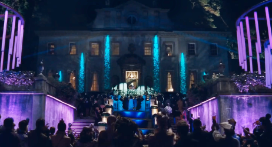
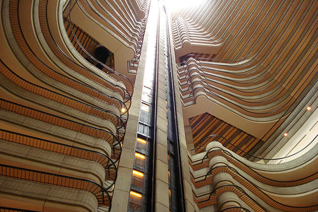
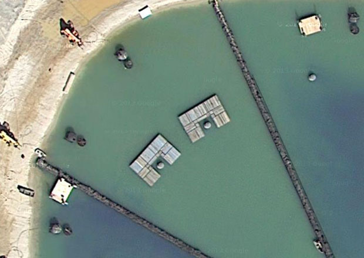

District 12: Henry River Mill Village in North Carolina
This abandoned mill town served as District 12 in the first Hunger Games film. Fans can walk through the preserved buildings that became Katniss Everdeen’s home district.
DuPont State Recreational Forest in North Carolina
Many arena scenes from the first film were shot here. The waterfalls and dense forest landscapes became the battleground where Katniss fought for survival.
President Snow's Mansion: Swan House in Georgia
The Swan House served as President Snow’s mansion in Catching Fire. Its grand columns and sweeping staircase perfectly capture the Capitol’s wealth and power.
Training Center: Atlanta Marriott Marquis
The dramatic futuristic atrium of this hotel in Georgia was used as part of the Capitol’s Tribute Training Center in Catching Fire. Its massive interior architecture feels straight out of Panem.
Catching Fire Arena: Clayton County International Park
The beach arena scenes in Catching Fire were filmed here. The park’s lake and surrounding forest became part of the Quarter Quell battleground.
